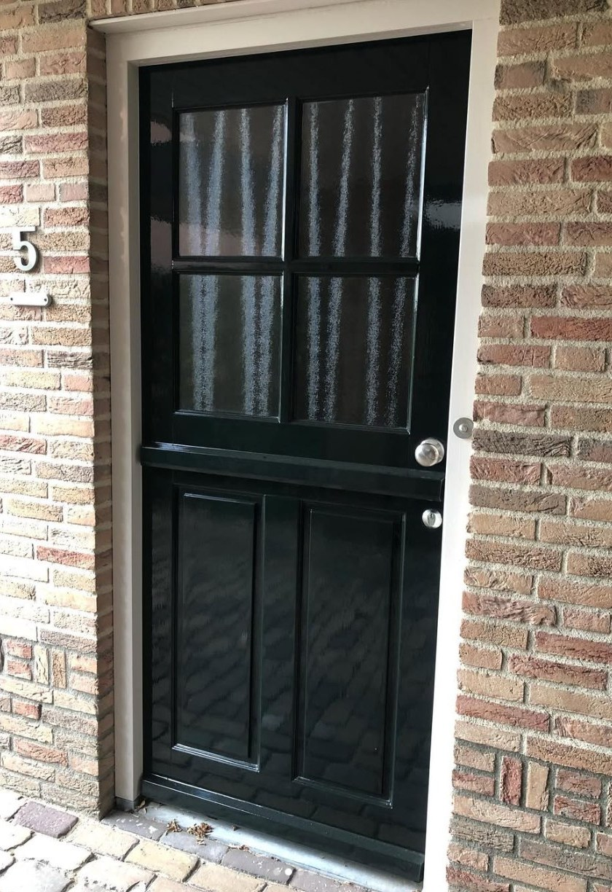
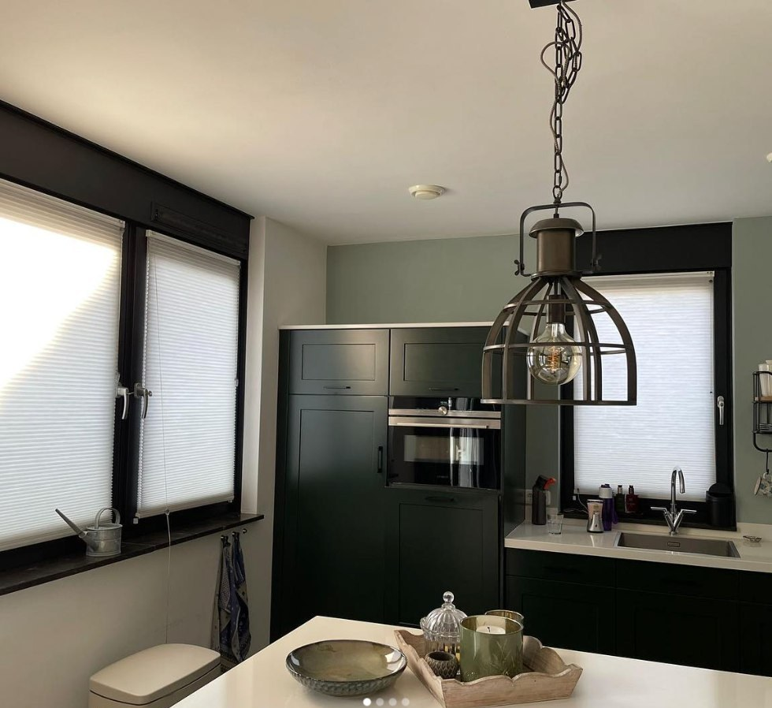
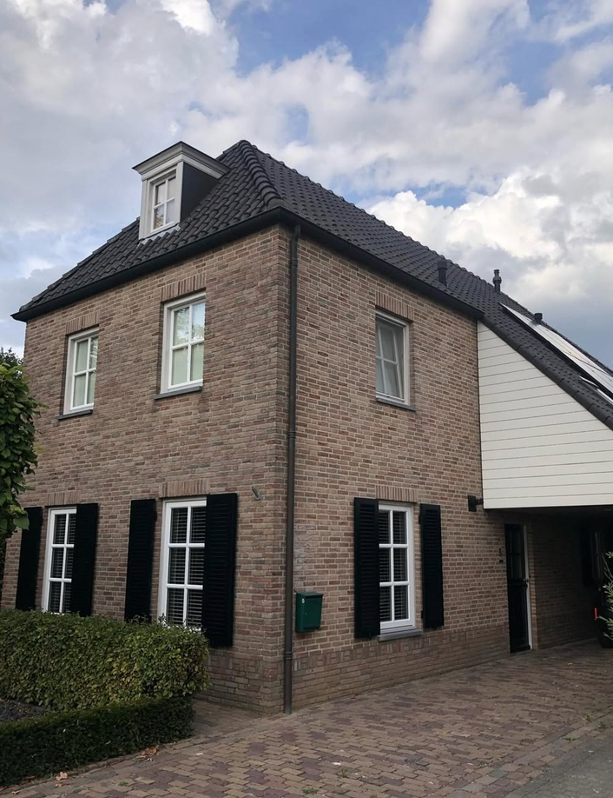
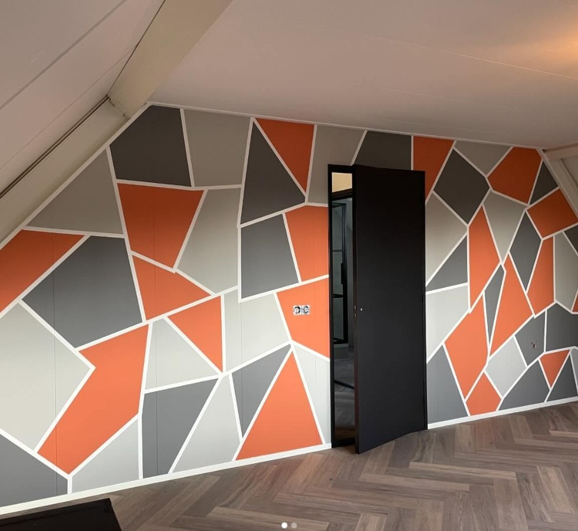
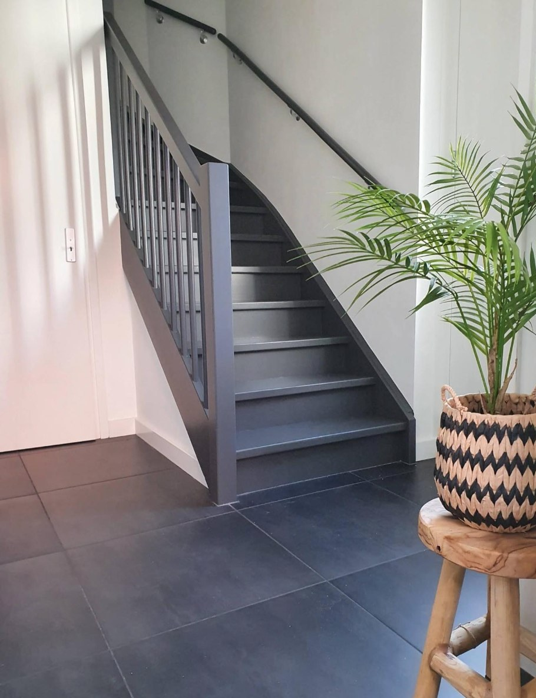
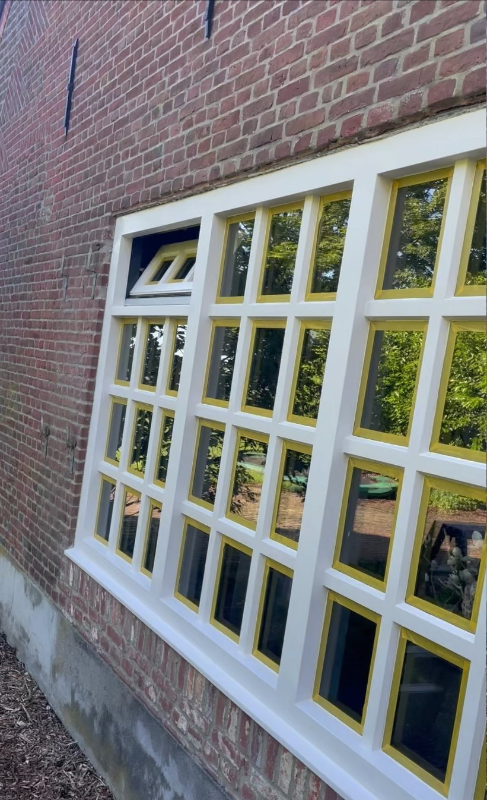

Of het nu gaat om een enkel kozijn, een volledige gevel of een creatief maatwerk-ontwerp: ik ga overal met dezelfde zorg en precisie aan de slag.

Kozijnen, deuren en gevels vakkundig geschilderd met verf die bestand is tegen weer en wind. Strak, duurzaam en netjes tot in de details afgewerkt.

Wanden, plafonds en interieurdetails strak en egaal geschilderd. Van een enkele kamer tot een complete woning — altijd nette afwerking.

Twijfelt u over de juiste kleuren? Samen stellen we een kleurenplan op dat past bij de stijl van uw woning en uw persoonlijke smaak.

Van een subtiel accent tot een volledig geometrisch ontwerp: ik denk graag mee over bijzondere, creatieve oplossingen voor uw interieur.

Trappen, plinten en overig houtwerk strak in de kleur naar keuze — een detail dat het verschil maakt in uw interieur.

Periodiek onderhoud houdt uw schilderwerk in topconditie. Ook voor complete renovatie van verouderd houtwerk bent u bij mij aan het juiste adres.